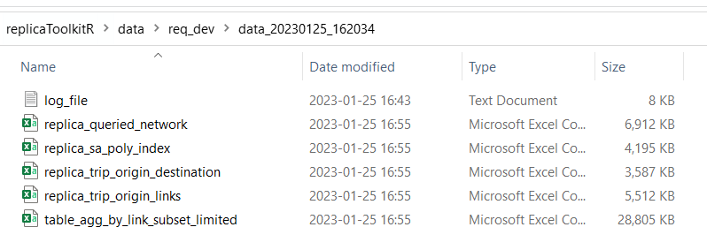
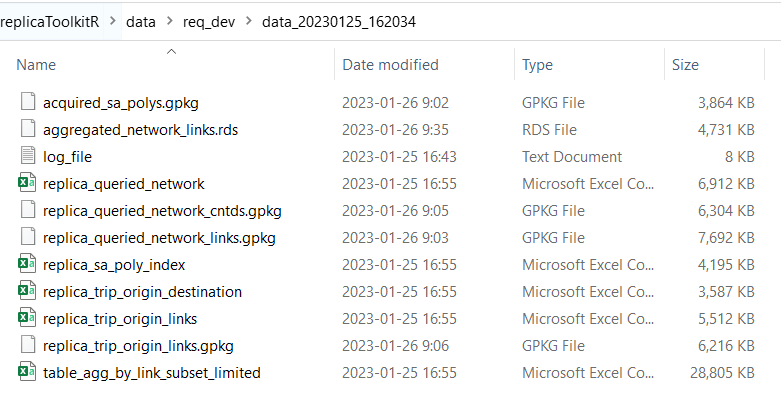
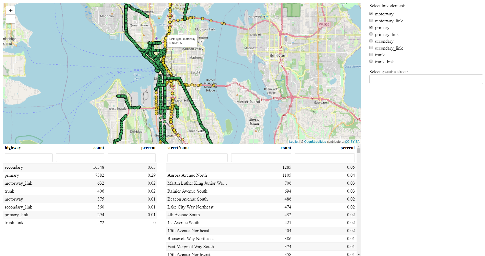
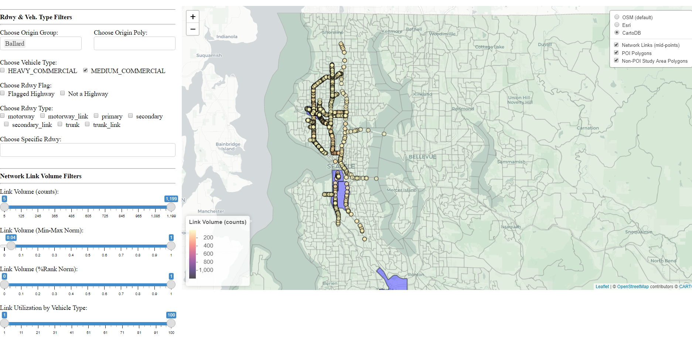

This R package provides a set of functions which allow the user to query and process Replica data. Using user inputs, SQL queries area made to the Replica BigQuery database. The results of those queries are returned to the user in the form of CSVs. Convience functions are then used to convert tabular data to spatial SF objects.
The usage of this package requires the user to have an account with Replica.
Installation
Install the development version from GitHub:
# install.packages("devtools")
devtools::install_github("michaelgaunt404/replicaToolkitR")Usage
Load the package.
The run the function query_network_trip_using_bbox() to query the replica database given your supplid inputs.
query_network_trip_using_bbox(
bb_network_layer = 'data/req_dev/study_area_network.shp'
,bb_sa_layer = 'data/req_dev/study_area_network.shp'
,network_table = "replica-customer.northwest.northwest_2021_Q4_network_segments"
,trip_table = "replica-customer.northwest.northwest_2021_Q4_thursday_trip"
,customer_name = "replica-customer"
,file_destination = "data/req_dev"
,max_record = Inf
,query_links = c("highway", "corridor", "road", "motorway", "motorway_link", "trunk",
"trunk_link", "primary", "primary_link", "secondary", "secondary_link")
)The above function will run and, at times, ask you for inputs that will either continue or terminate the run.
Output
When completed, the queried data will be written to the location defined by the input file_destination.
6 files will be written, they are:
-
log_file: Simple text file logging the events of the run. Records the table IDs of the temporary tables that are made in Google BigQuery table during the run. These can be accessed later.
-
replica_queried_network: The network queried by the user. The user will be asked if they want to download this file or not - it can be rather large given query inputs.
-
replica_sa_poly_index: A table containg all polygons found within the user supplied bb_sa_layer polygon.
-
replica_trip_origin_destination: A table containing counts of vehicles aggregated by origin polygon, destination polygon, and vehicle type. Origins and destinations outside of the study area are collapsed into single level calledout of study area.
-
replica_trip_origin_links: A table containg counts of vehicle given origin polygon and starting network link. This data set provides a more precise view of vehicle starting locations rather than by its origin polygon (usually census block groups). This is useful when performing hotspot analyses or calcualting kernel desnity estimates (KDEs).
-
table_agg_by_link_subset_limited: A table detailing network link volumes for a given day aggregated by origin polygon and network link
All the data listed above are save as CSVs. Conveince functions are provided to convert tabular data to spatial data and save as GPKG or RDS files.
Resulting files in folder after data acquisition.

Data Processing
As indcated above, replicaToolkitR provides convience functions to convert the tabular data acquired through query_network_trip_using_bbox() to a spatail format conducive to mapping.
NOTE: The functions in this section can be supplied an object to transfrom or location/folder inputs that point to where your data is saved. If the latter is supplied then the function will go and automatically load whatever file the function calls for. Suppling an object directly is compataible with the
targetspackage workflow.
Acquire origin polygons from the tigris census API package using replica_sa_poly_index.
data("replica_sa_poly_index")
get_tigris_polys_from_replica_index(
network_object = replica_sa_poly_index
,states = "WA"
,auto_save = F
)Make SF linestring spatial object of network links.
data("replica_queried_network")
make_network_link_layer(
network_object = replica_queried_network
,auto_save = F
)Make SF point spatial object by extracting center points from network links.
data("replica_queried_network")
make_network_centroid_layer(
network_object = replica_queried_network_links
,auto_save = F
)SF point spatial object of trip first link aggregation table.
data("replica_trip_origin_links")
make_trip_origin_point_layer(
first_links_object = replica_trip_origin_links
,auto_save = F
)Make RDS list object containing network volume aggregation tables.
data("table_agg_by_link_subset_limited")
aggregate_network_links(
network_object = table_agg_by_link_subset_limited
,auto_save = F
)The below image shows the saved files in the designated folder after processing.

NOTE: This functions will always return an object. If you do not choose to
auto_saveyou will still be returned the result. It is advised toauto_savethe object at some point as naming conventions will be respected.
Analysis Tools
This package contains a number of functions that create interactive, filterable leaflet widgets that can aid you in your analysis and research.
Make widget of acquired network links, see example below code:
data("replica_queried_network_links")
inspect_queried_network(
network_links_object = replica_queried_network_links
)
Make widget of network links pre-aggregated a number of ways, see example below code:
-
make_network_map_anltpt()-AggregatedNetworkLinks by vehicleTriPType -
make_network_map_anlt()-AggregatedNetworkLinks by vehicleType -
make_network_map_anlt0()-AggregatedNetworkLinks by vehicleType andOrigin
data("aggregated_network_links")
data("poi_list")
data("acquired_sa_polys")
make_network_map_anltpt(
network_cntrd_object = aggregated_network_links
,poi_list = poi_list
,origin_polys = acquired_sa_polys
)
make_network_map_anlt(
network_cntrd_object = aggregated_network_links
,poi_list = poi_list
,origin_polys = acquired_sa_polys
)
make_network_map_anlto(
network_cntrd_object = aggregated_network_links
,poi_list = poi_list
,origin_polys = acquired_sa_polys
)
What Now?
Lastly, this package contains functions that save basic analysis functions.
Run the below code to create an analysis template.
replicaToolkitR::make_query_and_process_replica_script()